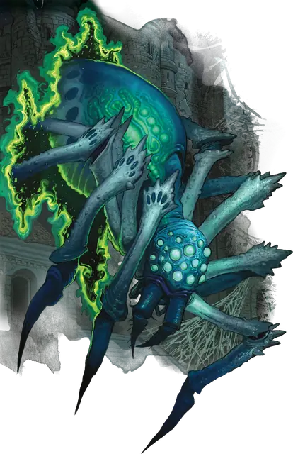

Исчезающий паук
Phase Spider
Большое Чудовище, без мировоззрения

Класс Защиты 14 Инициатива +3 (13)
Хиты 45 (7к10 + 7)
Скорость 30 футов, Лазания 30 футов
| мод | спас | ||
|---|---|---|---|
| СИЛ | 15 | +2 | +2 |
| ЛОВ | 16 | +3 | +3 |
| ТЕЛ | 12 | +1 | +1 |
| мод | спас | ||
|---|---|---|---|
| ИНТ | 6 | −2 | −2 |
| МДР | 10 | +0 | +0 |
| ХАР | 6 | −2 | −2 |
Чувства Тёмное зрение 60 футов, пассивное Восприятие 10
Языки нет
Опасность 3 (700 опыта; БВ +2)
Особенности
Эфирное зрение. Паук может видеть в пределах 60 футов на Эфирном плане, пока находится на Материальном, и наоборот.
Паучье лазание. Исчезающий паук может лазать по сложным поверхностям, включая потолки, без совершения проверок характеристик.
Хождение по паутине. Исчезающий паук игнорирует ограничения перемещения, вызванные паутиной, и знает точное местоположение всех других существ, находящихся в контакте с той же паутиной.
Действия
Мультиатака. Паук совершает две атаки Укусом.
Укус. Бросок рукопашной атаки: +5, досягаемость 5 фт. Попадание: 8 (1к10 + 3) Колющего урона плюс 9 (2к8) урона Ядом. Если этот урон опускает Хиты цели до 0, она немедленно стабилизируется и получает состояние Отравленный на 1 час. Пока цель Отравлена таким образом, она также Парализована.
Бонусные действия
Эфирный скачок. Паук телепортируется с Материального плана на Эфирный или наоборот.
Бонус мастерства +2
Среда обитания Город, Леса, Луга, Подземье, Пустыня, Холмы, Эфирный план
Сокровища Любые
Исчезающий паук
Нападающий из засады планарный арахнид
Исчезающие пауки возникают словно из ниоткуда, атакуют и столь же стремительно исчезают. Эти магические паукообразные размером с лошадь — коренные обитатели Эфирного плана. Из своих туманных убежищ они вглядываются сквозь Пограничный Эфир в Материальный план. Обнаружив добычу, исчезающие пауки подбираются ближе, а затем переходят (т.е. меняют «фазы») на Материальный план для нападения. Они перемещаются между планами бытия и атакуют с самых неожиданных направлений, пока не одолеют жертву или не будут вынуждены отступить.
Исчезающие пауки умнее обычных пауков, но в большинстве своём трусливы. Обычно они бегут, если их численно превосходят существа, способные видеть на Эфирном плане или преследовать их там. Исключение делается лишь для привидений и подобных им духов: исчезающие пауки черпают из них пропитание и преследуют как излюбленную добычу.